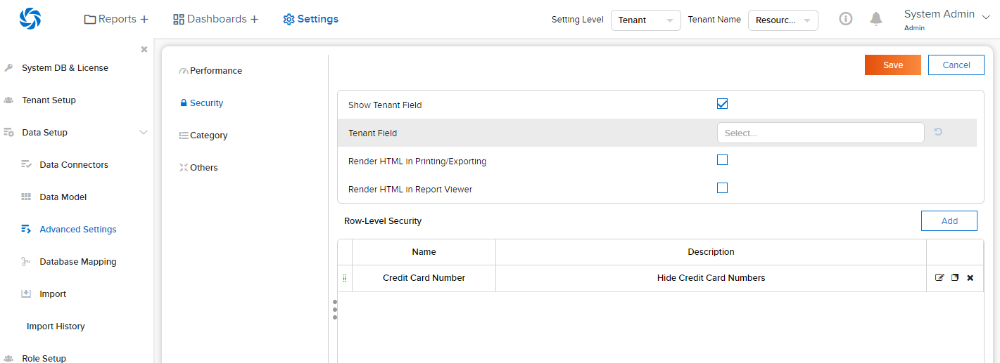
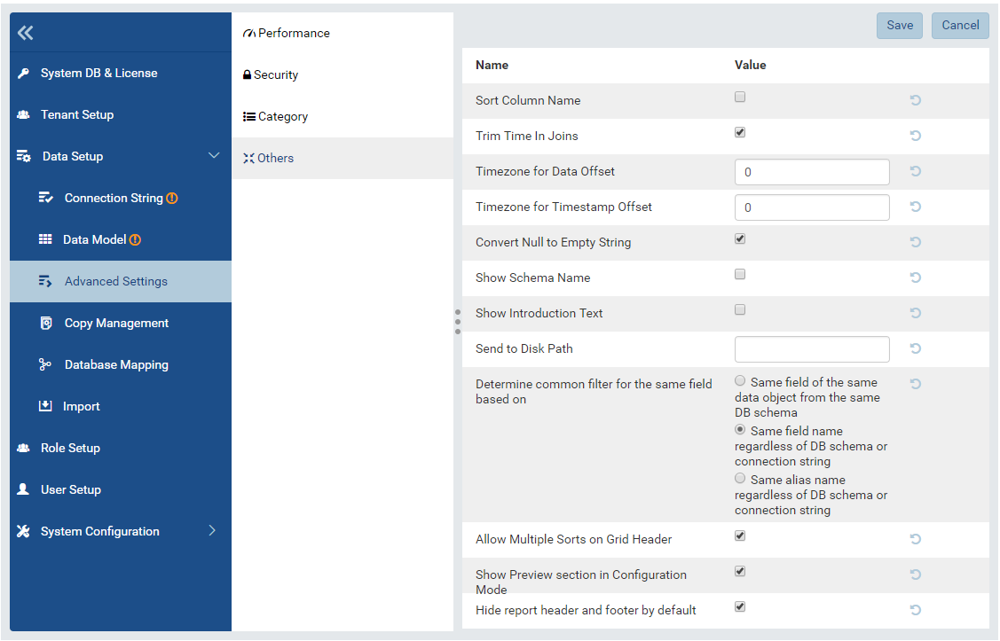

Advanced Settings¶
The Advanced Settings page allows user to
- manage the list of data source categories
- update system settings in related groups
Steps to config Advanced Settings¶
In browser, log in to Izenda as a user with Advanced Settings permission.
Click Settings, then Data Setup then Advanced Settings in the left menu.
Select the Setting Level: either System or a specific tenant.
Click on a tab to view values.
Hover on information icon following the value name to see the brief guide of that value
Update the values.
Click Save button at the top to save the whole settings.
Update Performance Settings¶
In Advanced Settings page, click on Performance tab in Middle Panel to view the items. The Performance items are list as below:
Section Purpose Default Value Query Timeout To limit the duration of all queries in any page. 3600 Use No Lock To not use NOLOCK (dirty read) statement when querying data. True Data Source Limit To limit the number of data sources in a single report. 1000 Field Limit To limit the number of fields in a report part. 1000 Query Limit To limit the number of values returned from the query in Report Designer, Report Viewer, Dashboard and Export. 100000 Pivot Column Limit Limit the number of columns in a pivot report part. 100000 Filter Limit Limit the number of items displayed in Filter Value dropdown 1000
Note
The Use No Lock setting instructs the database engine to return the current version of data immediately, instead of waiting for all pending transactions to complete. Check the possible consequences here before using this option.
Update Security Settings¶
In Advanced Settings page, click on Security tab in Middle Panel to view the items. The Security items are listed as below:
Fig. 105 Setting values provied in Security tab
Update settings in Tenant group¶
Tick on Show Tenant Field checkbox will show the field(s) which is(are) sepcififed in Tenant Field in report/dashboard. Otherwise, those fields will be hidden.
For security in multi-tenant systems, set up Tenant Field then all reports and dashboards will automatically restrict data retrieval to only that of the current tenant. To enable this feature:
- Input the name of tenant id field into the Tenant Field box
- The Tenant Field must be enclosed in brackets: [fieldname]
- Press Enter to add tenant field
- You can use multiple tenant fields
Update settings in Additive Fields group¶
- Tick on Set Additive Field Auto Visible will automatically set the additive field when physical data model changes as Visible
- Tick on Set Additive Field Auto Filterable will automatically set the additive field when physical data model changes as Filterable
Update Categories Settings¶
Add data source categories¶
A category should be added before showing up for assignment to a data source.
In browser, log in to Izenda as a user with Advanced Settings permission.
Click Settings, then Data Setup then Advanced Settings in the left menu.
Select the Setting Level: either System or a specific tenant.

Fig. 106 Category Menu
Click Category in the Middle Panel. (Fig. 106)
Click Add New + button and type the name into the new text box. (Fig. 107)

Fig. 107 Add New button
Continue to click Add New + button to enter more categories.
Click Save button at the top to save the whole list.
Note
User will not be able to save the list unless there is no duplication.
Delete data source categories¶
In the category list, click the delete icon (x) on the right of each category to delete it. (Fig. 108)

Fig. 108 Delete icon
Click OK in the pop-up confirmation. (Fig. 109)
The category is deleted immediately.
The Save and Cancel buttons at the top does not have any effect in this action.
Note
The category will be deleted even if it has been assigned to data sources. After that these data sources will have no category.
Note
To change the name of a category, the Rename data source categories feature should be used instead.
Rename data source categories¶
Renaming a category will only change the name and keep the assignments to data sources intact.
In the category list, click the text box of any category and change the name. (Fig. 110)
Continue to change more category names
Click Save button at the top to save the whole list.
Update Others Settings¶
In Advanced Settings page, click on Others tab in Middle Panel to view the items. The Others items are listed as below:
Fig. 111 Setting values provied in Others group
Section Purpose Default Value Sort Colum Name When unselected fields in field tab of report designer, join dropdown and input paramters in filters sort alphabecitally. When selected, these fields sort based on position in the databse. 0 Trim Time In Joins Tick on this checkbox to trim the time portion form the Date Time field in each join statement in Report Designer - Relationship page. Otherwise, system will use Date Time field in each sort statement True Timezone for Data Offset To set default value for the Timezone Data Offset in Settings > User Setup page. And this setting will effect to displayed data value of Datetime/Time fields in the report part.
For example:
In database the data value is 11:00. If user sets “+5” in the textbox of this section then the data value will be shown as 16:00 in the report part.0 Timezone for Timestamp Offset To set default value for the Timezone Data Offset in Settings > User Setup page. And this setting will effect to all Datetime/Time field in system.
For example:
The created date of report is 11:00. If user sets “+5” in the textbox of this section then the created date will be shown as 16:00 in the system.0 Convert Null to Empty String Tick on this checkbox to convert all null values to blank (empty) in reports or dashboards. Otherwise, null values keep the orginal values. False Show Schema Name Tick on this checkbox to show schema name together with the the data source name in any place. Otherwise, the schema name will be hidden False Show Introduction Text To show the Introduction Text in the following section:
- Report Designer > Data Source tab > Content Panel > under Report Name
- Report List > Content Panel > under each report nameFalse Send to Disk Path To define the path to save files for all Scheduled/Subcribed instances with Send to Disk delivery method, input path in the textbox of that section.
Note
- When the report is saved into this location, system will save report name together data time so that saving the new version of this report will not overwrite this report. The format when saved: <report name>_<mmddyyyy>_<hhmmss>
- For example:
If report “ABC” is saved to disk path at 10/22/2016, 23:59:00 then the report will be saved with name = ABC_10222016_235900Null Determine common filter for the same field based on To determine how the filters considered whether different or the same in the dashboard so they will be common filter and shown in dashboard filter section or not. There are three available options:
- Same field of the same data object from the same database schema
- Same field name regardless of database schema or connection string
- Same alias name regardless of database schema or connection stringNote
Stored Procedure stored procedures input parameters are only considered common when they are from the same stored procedure.
Please see Dashboard Filters for more details about common filter in dashboard.
Same field of the same data object from the same database schema Allow Multiple Sorts on Grid Header By selecting this checkbox, user can sort on multiple columns when clicking on Grid header in Vertical/Horizontal report. Otherwise, user can only sort by one column at a time. True Show Preview section in Configuration Mode By selecting this checkbox, both Configuration and Preview sections display in the report part’s backside and setting popups. Otherwise, system only shows Configuration section. This is useful when working with very large datasets as the database is not called until the report part is flipped to the front side. True

{kind=link}
{kind=link}
{kind=link}
{kind=link}
{kind=link}
{kind=link}